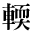
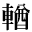
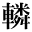
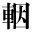
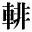
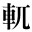
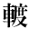

| 1_92_44.gif |
●中島敦『山月記』（新字・新仮名） |
|
|  | 1_92_46.gif |
●V.M.ガールシン、二葉亭四迷訳『四日間』 ●徳田秋声『あらくれ』 |
|  | 1_92_47.gif |
●寺田寅彦『寺田寅彦随筆集第二巻「科学について」』 ●『敬首和尚の典籍概見』 |
|  | 1_92_48.gif |
●夏目漱石『虞美人草』 |
|  | 2_89_62.gif |
●芥川龍之介『地獄変』（新字・旧仮名） ●芥川龍之介『地獄變』（旧字・旧仮名） |
| 2_89_65.gif |
●夏目漱石『満韓ところどころ』 |
|
|  | 2_89_66.gif |
●芥川龍之介『好色』 ●芥川龍之介『地獄変』（新字・旧仮名） ●芥川龍之介『地獄變』（旧字・旧仮名） ●岡本綺堂『玉藻の前』 |
|  | 0212_6457.gif |
●夏目漱石『満韓ところどころ』 |
|  | gaiji001.gif |
●中島敦『悟浄出世』 |